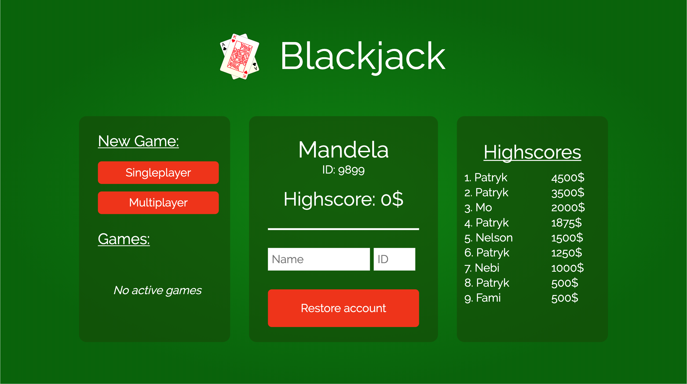
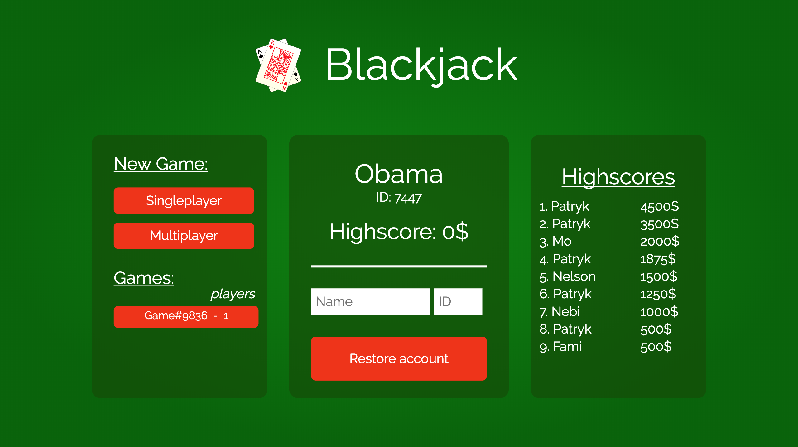
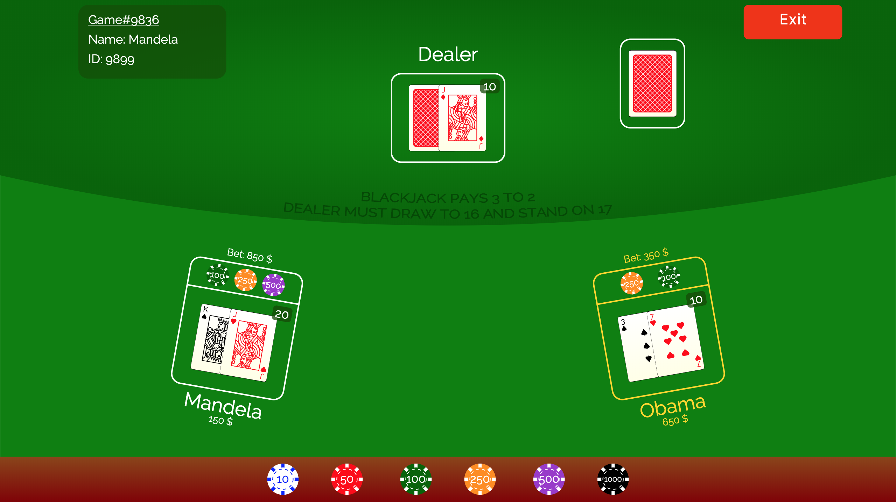
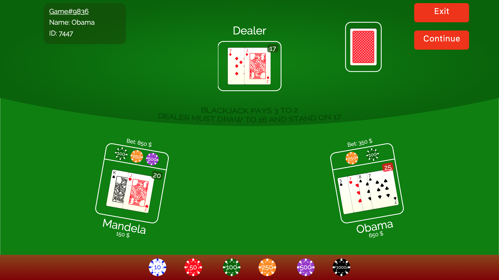

Documentation - XML-Technologies
Winter term 2020 - Group DocBook
Table of Contents
List of Figures
- 4.1. Icons
- 4.2. Card Sketch
- 4.3. Card Example
- 4.4. Lobby Interface - not logged in
- 4.5. Lobby Interface - logged in
- 4.6. Lobby Prototype
- 4.7. Table Interface
- 4.8. Table Prototype
- 4.9. Class-Diagram: Modules
- 4.10. State-Diagram: Game-Phases
- 4.11. Activity-Diagram: Deal-Phase
- 4.12. Activity-Diagram: Dealer-Turn
- 5.1. Model: Model-View-Controller
- 5.2. Data-Model: Lobby
- 5.3. Data-Model: Card-Value
- 8.1. The SCRUM development process [https://commons.wikimedia.org/w/index.php?curid=3526338]
Table of Contents
This DocBook documents the development and implementation of a multi-client Blackjack game which is only using XML technologies. We present an overview over these technologies and the way we used them. Furthermore, it describes the rules and strategies we agreed on for our Blackjack game, the important phases with possible user actions, the interaction between client and server, as well as the design and implementation in detail. A complete walkthrough with the installation of the game and an example of a game play is shown. In addition, we discuss the way we organized our project and reflect on positive and negative aspects.
The project is part of the practical course XML-Technologies (IN0012, IN2106, IN4013) in the winter term 2019/2020. Throughout the lecture Prof. Anne Brüggemann-Klein and Phillip Ulrich introduced us to the XML technologies such as SVG, XHTML, XSLT, XQuery and XPath. The objective of this project is to implement a multi-client browser game of Blackjack by making use of XML technologies exclusively.
During the first part of the lab we received tasks every week which we were able to complete with the newly introduced technology. In this manner we were able to get to know and to practice the use of the important technologies step by step.
The second part, the actual development project, began after the last meeting in the second week of January. We had to organize ourselves within the group and decide on methodologies on how to implement, design and document the requirements stated in the project assignment. The project ends with the completed game, documentation and a final presentation.
We decided to implement a general Blackjack game according the basic rules defined by Bicycle [https://bicyclecards.com/how-to-play/blackjack/]. We did not implement additional rules like 'splitting pairs' or 'doubling down'.
The target of each player is to reach a combined card value as close to 21 as possible, without going over 21 yet still beating the dealer.
To start a round at least one player has to be in the game, but in one game a maximum of 7 players is allowed. Nevertheless, every player is playing each for himself against the dealer, which is represented by the computer.
Every player bets an amount of chips which will be placed in the pool. Obviously it is not possible to bet more chips than the participant has in his wallet.
We use a six-deck game, which means that six decks with 52-cards are combined to 312-cards. In the dealing phase two cards face up will be distributed to each player after the betting phase. The Dealer takes one card face up and the second card face down. Each card takes its pip value and face cards are 10. Aces can take the value of 11 or 1 depending on the total card count. If the count is over 21 the value of ace switches to 1.
As a player you must decide whether you want to draw another card ("hit") or you don't want another card ("stand"). You can repeat this until you reach a count over 21.
Once all players stand on their Cards the dealer's second card gets turned up. Now the dealer draws cards until he has a count of 17 or more, at which point the dealer must stand.
The winner gets determined by comparing the count of the player with the dealer's total card value. A player wins and gets paid double of his bet when the dealer has a lower hand or if the dealer goes bust. If the player count equals 21, the player scored a blackjack and is paid 2.5x the original bet. The dealer wins if he has a higher hand or the player goes bust. In this case the player loses his bet. A tie is possible if both have the same total value. Then the player gets back his bet.
As mentioned in Chapter 1, we were introduced to powerful tools which make it possible to write a documentation, to save and encode data of a game state, to generate a GUI using the saved data, as well as to interact with data. In the following these tools are addressed and briefly introduced.
XML is the basis for this project. It stands for Extensible Markup Language and defines a set of rules in which documents get encoded in a platform independent format that is readable for humans and computers due to its clear and simple structure. The data of game states is encoded in XML and therefore can easily be transformed and transferred to the web.
DocBook is a semantic markup language which we use to write our documentation. It simplifies the creation of documents with a clear logical structure. In addition, the data is saved in a neutral format which makes it possible to easily transform it to a variety of formats, including HTML, XHTML, PDF, etc. Furthermore, the content quality can be improved by automatic validation through a DTD file.
SVG (Scalable Vector Graphics) is a language to define vector based 2-dimensional graphical objects, meaning that they can be scaled efficiently for any size. SVG images are defined in XML-format. We used it to create all our graphical components like cards, chips, buttons, etc.
"XSLT (Extensble Stylsheet Language Transformations) is a language for transforming XML documents into other XML documents or other formats such as HTML for web pages, plain text or XSL Formatting Objects, which may subsequently be converted to other formats, such as PDF, PostScript and PNG. "(Source: https://en.wikipedia.org/wiki/XSLT). In our project it is used to dynamically transform our game states encoded in XML into an XHTML document, which can be used to graphically display the game state in the browser. Moreover, the chips and cards are dynamically transformed using XSLT. The elements of the XML documents are selected with a query language called XPath. XPath is a big a part of XSLT and widely used to navigate through elements and attributes.
XQuery is a very efficient querying language for XML databases. It enables the
interaction with the databases. Which makes it possible to delete, insert and
replace database nodes. Just like in XSLT nodes are addressed using XPath. The game
actions are implemented using XQuery functions. The functions are initiated by
HTTP-Request which are mapped by RESTXQ-Annotations (for example:
"localhost:8984/docbook_blackjack/lobby").
BaseX is a management system for XML databases and a XQuery processor. BaseX represents the server side of our implementation to store the databases. This makes it possible to query big XML documents as well as transfer the transformed data to the clients using Websockets.
Since a REST-Response can only be sent to the client, who sent the REST-Request, Websockets are an useful tool to also send updates to clients which did not sent a request. BaseX-STOMP offers these websockets. If a client opens a page he subscribes to the websocket. This websocket-connection will not be closed. The server can then send messages to all clients which subscribed to the websocket. Additionally, a client can also send a message to the server.
Table of Contents
The project requirements were initially specified in the project exercise and describe the expected functionality of the Blackjack game while at the same time acting as the project backlog for our development process. Based on the given aspects, we have considered the following points for our final implementation:
-
The game should follow the blackjack concept as introduced in Chapter 1.
-
The project is to be implemented as a web application by purely making use of XML technologies described in the Chapter 2.
-
The game must be implemented using the multi-client principle, i.e. it should be possible for multiple persons to play one single game within their own client instance.
-
Apart from the game functionality itself, a Lobby must be implemented such that players are able to register themselves and to create or join games. Players are assigned a randomly generated ID which can be used to restore player accounts from previous sessions.
-
The Lobby should also include a high score board keeping track of the highest player scores achieved throughout their finished games.
-
The system architecture must follow the Model-View-Controller (MVC) pattern. Each method should be included in its particular module, which is responsible for its area in the MVC model.
-
A high degree of parametrization and customizability should be given in order to guarantee a high reusability of system fragments. This encourages the general software engineering rule of low coupling and high cohesion between modules.
-
The design process is to be modelled and documented adequately, thus encouraging a model driven development process. For instance, the usage of low-fidelity prototypes such as sketches allows to describe the functionality of the user interface. Class diagrams should be used to model data and method relations, activity and state diagrams should model the system behavior. Additionally, a description of all REST requests and responses between the client and the server should be created.
-
Finally, the previous design models and decisions are to be included in this documentation, which should give an overview of the whole project.
In addition to the above stated required functionalities we decided to implement extra features:
-
Possibility to play multiple games administered by one server
-
Deployment to a web server, which makes it possible to play the game without further requirements, installations and from distributed positions locations
The implementation is separated in the different languages as explained in Chapter 2. Here we go more into detail regarding the different components of our architecture.
The XSLT templates are used to dynamically generate a HTML output depending on the current game state.
Cards are generated once they are needed. This happens through a XSL template call that is called in the game template, whenever someone draws a card. The value and type are passed as a parameter. The icons of the card types were pre-defined using SVG graphics.
The first step is to check if the card is hidden. If so, the template just draws a pattern and returns. Otherwise, the value is written in the top left and bottom right corner. Icons are loaded or rotated depending on the card type and placed in a number of positions according to the value using a loop iterating through the card center. The positions and rotation of the icon are saved in a different xml file. We used these schemes to create the icons in SVG.
Just as the creation of cards, chips are generated by calling the chip template and passing the value as a parameter. Possible chip values are 10, 50, 100, 250, 500 and 1000. Of course, they determine the value as well as the color.
In the template we take advantage of <symbol> and
<use> elements to create a chip in three steps. First, the
outer circle is filled with the chip color and thick white lines. Above the
first circle and lines another smaller circle is drawn in the color of the chip.
The final step is to add the dotted circle wherein the value is written.
Once a user calls the link to the Lobby
(/docbook_blackjack/lobby), the parameters isLoggedIn,
playerName, playerId, playerHighscore
are passed to the template. It uses these parameters and the current lobby
database to generate the appropriate SVGs and HTML page. There are two different
options how a Lobby is presented. Either the isLoggedIn parameter
is set to 0, which means that no account is loaded yet, or to 1 in case there is
a registered account.
This renders to a Lobby looking like this:
The graphical user interface changes when the user creates an account or restores his account by typing in his name and id.
At the beginning of our project we started with creating basic low-fidelity prototypes in form of sketches. As you can see in the following sketch, the implementation was strongly derived out of the first mockup, by then incrementally adding functionality.
The Game Template is called to display the game state in the view of each player who are differentiated using websockets. Different views in which the buttons vary are presented depending on the phase and which actions are currently possible. All phases are explained in detail in Section 4.4. Every time a user performs an action, such as to bet or to take another card, the game state changes. Therefore, the view has to be refreshed by transforming the game model using the game template and sending it to the related users.
The position of the players on the screen is dynamically calculated using a mathematical function that takes into consideration how many players are part of the game. For each player their respective Name and ID, as well as general game information are shown in the top left corner. This can only be seen by the players themselves respectively. On the other side name, wallet, bet and cards are always visible for other players.
Similar to the Lobby our implementation remained almost equivalent to the first mockup.
Our programm is logically divided into 4 modules: Blackjack-Controller, Blackjack-Main, Blackjack-Websocket and Blackjack-Helper.
A representation as a UML-class diagram is provided below. A comprehensive documentation generated with xquerydoc and transformed to XHTML can be found in the directory documentation/xqdoc.
The Lobby as well as the Game have several states. A user in the Lobby can be
either in the "not logged in"-state or in the "logged in"-state. To switch from the
"not logged in"-state to the "logged in"-state the user has to create a new account
(via the createAccount()) or, if she knows the ID, restore an existing
Account (via the restoreAccount()-function).
There are two ways to join a Game from the Lobby. The first one is by creating a
new game (either a singleplayer or multiplayer game) with the
newGame()-function. Alternatively, it is possible to join an existing
multiplayer game with the joinGame()-function. In each phase of the
game a player can leave this game and return to the Lobby (with the
leave()-function).

A game has four phases:
-
The starting phase is the bet-phase. If an player enters this phase, he will subscribe to the websocket of this game. Additionally the deck will be reset. All players can bet chips for the next round at the same time. They can also reset their bets to correct mistakes. If all players have confirmed their bets, the game switches to the deal-phase.
-
The deal-phase is completely processed by the backend-system. First each player and the dealer draw one card from the deck. Since this is the first card for the dealer his card will be hidden. After a database update, which is necessary because the dealer received his first card, each player and also the dealer draw a second card. Now the dealer gets a revealed card. In the next step the first player is set to the player, which is on turn. This is necessary for the next phase to begin. If a player decides to leave during this phase he will be redirected to the Lobby. If not, an update of the game-page will be send via the websocket connection.
-
In the play-phase each player does his turn one after another. A player can either hit or stand during his turn. After the last player finished his turn the dealerTurn starts. During the dealerTurn the dealer draws a card if his hand value is lower than 17, updates the database and restarts the dealerTurn with the additional card. If the hand value is 17 or higher, he stands and the phase changes to "pay". As in the deal-Phase, the dealerTurn can also be triggered by a leaving player. If so, this player will be redirected directly to the Lobby. If not, an update of the game-page will be sent via the websocket connection.
-
The last phase is the pay-phase. At the start of this phase the result of the game is presented on the table. If any player decides to continue all players will be paid out in case they won win, then their hands and their pools will be cleared. The dealer hand is also cleared. Then the game switches to the bet-phase again and an update of the game-page will be sent via the websocket connection.


Table of Contents
This chapter describes the connections between the different hardware-components which are basing on a Model-View-Controller architecture pattern. The second section presents the data-models of the lobby, containing scores, games, and card-values, which will be used to generate the card-svgs.
The program is separated in the separate sub-components: the Model, View and Controller:
-
The Model-component contains the data stored in a database as XML. This database processes the updating constraints, which will be sent by the Controller-component. Additionally, the Model-component sends the requested data as XML-elements to the Controller.
-
The View-component is the graphical user interface for the user-client. The GUI will be sent from the Controller in an HTML and SVG format, either as an REST-response or via the websocket-connection. Also, the Views can send REST-Requests to the Controller to perform changes on the Model and to get the Model.
-
The Controller-component is placed on the Server and processes the incoming REST-Requests. Therefore, it uses XQuery as a functional programming-language. Additionally, it uses XSLT to generate the HTML and SVG out of the model-data and send them to the View.
The data is saved using XML on the BaseX database-Server.
The data-model of the lobby starts with the lobby itself as the
root-element. Inside the lobby there is a
scores-element which contains all scores and several games. These
games always contains one deck with up to 312 cards, one
dealer and a players element, where all players
participating in the game are stored. The players also have one
wallet and one pool, where the bet chips are
stored. All players and the dealer elements contain one hand
element which can contain up to 22 cards (21 aces and one additional
card).
To generate the number-cards dynamically, we use an XSLT-file which creates
the SVG image of a card based on the values-xml. For each possible card value
from Ace to 10, there is a value-element with the character of that
value. Inside these value-elements there is a list of all
points, where the card has a symbol to be drawn (e.g. one point
for ace, …, ten points for 10). It also includes information whether this symbol
should be rotated.
Table of Contents
Additional to the project requirements we deployed our project to a web server, hence there are two ways of playing our Blackjack game:
-
Online on the web server using this URL: http://blackjack.brzoza.me
-
Locally using a BaseX Server on your own Computer
We recommend the usage of Google Chrome as Browser. Our game is compatible with Google Chrome and Firefox on Windows and macOS, but it is optimized for Google Chrome only. (Please do not use Internet Explorer or Safari as it can result to rendering issues).
-
For the first option the only requirement is an IPv4 connection. The server cannot be addressed through IPv6.
-
The second option requires a running BaseX STOMP HTTP server and running BaseX database Server.
-
No installation has to be performed to play the game on the web server.
-
To install the BaseX STOMP HTTP sever a few steps have to be made
-
Download the complete BaseX program (BaseX931.zip, status March 2020) from their website http://basex.org/download/.
-
Download and build the BaseX STOMP packet from the stomp branch in the git repository (https://github.com/BaseXdb/basex/tree/stomp) using Maven.
-
Copy the webapp/docbook_blackjack folder into the webapp folder of BaseX.
-
Copy the static/docbook_blackjack folder into the webapp/static folder of BaseX.
-
Now you can start the BaseX HTTP server.
-
The game can be played by calling this link: http://localhost:8984/docbook_blackjack/setup.
The databases are created upon first calling the setup link. Once all databases are created, the setup link will directly redirect to the Lobby. To delete the databases, you have to access them directly on the BaseX database administration interface using this link: http://localhost:8984/dba
-
In this chapter we will present a short demo of the gameplay with screenshots in different user situations and from different points of view.
On the left you can see the lobby which is shown before you are logged in and on the right once you created or restored an account.

Mandela created a multiplayer game, that Obama can join by clicking on the game button in the scrollable games list. On the right-hand side the game is in the bet phase and Obama has already confirmed his bet, what can be seen by the check mark next to his name. Obama has no buttons to press and is now waiting for Mandela to confirm his bet.

In these two pictures the view of Mandela during the play phase is shown. After two cards are dealt to both players, Mandela can press the button hit or stand on the left picture. Mandel is satisfied with his hand and chooses to stand. That leads to the right situation in which Mandela is waiting for Obama to hit or stand. As you can see the box of the player who is on turn is colored in gold.

After all players stand or go bust we are in the pay phase where the final hands of dealer and players are shown. Through the button Continue the players have the possibility to start a new round. The Exit button can be used to get back to the lobby.

Table of Contents
Our team was formed at the beginning of the practical course and consists of three team members, namely Patryk Brzoza, Moritz Issig and Fami Mahmud. To allow for asynchronous communication with each other, we created a Telegram group, where we could discuss our project apart from our weekly meetings.
In order to manage and modify our codebase between all team members, we created a Git repository hosted on the LRZ GitLab. This allowed us to fully make use of the powerful functionality given by Git. We used separate branches to implement new features, which we then merged to the master branch upon implementation. Additionally, it is possible to keep track of and resolve known issues by using the included issue tracker. The web interface allows inspecting files on-the-go without having direct access to the Git repository. To resolve merge conflicts, we used the Git CLI and SourceTree. For the development process itself we used IntelliJ IDEA, as it allows for extensibility through numerous plug-ins, e.g. to allow syntax highlighting of XQuery files or in order to transform documents using XSLT.
Due to the constant addition of new requirements and the rather small size of our team, we decided that an agile project management structure would fit our development process best and chose SCRUM to be a suitable framework to apply it. The overall requirements defined at the beginning of the project are defined in the project backlog which acts as a guideline for the whole project life cycle. We have defined these requirements in Chapter 3.
The actual development process is subdivided into multiple iterations of a fixed length defined as sprints, which we chose to match the exercise sheet working time of one week. Each sprint consists of another sprint backlog, which includes the work to be done within one sprint and mostly matched the content of the given exercise sheet. We defined this during the weekly SCRUM meeting, which mostly took place before or after the weekly practical course lecture. Each team member then chose which sprint backlog item should be assigned to him and then proceeded to implement it during the sprint. One advantage of the SCRUM process is that each sprint terminates with a potentially deliverable product increment, which made the development process much easier for us as we could improve the functionality of our existing product each week.
In addition to our code repository managed on GitLab, we implemented a script which automatically deploys the most recent commit version onto our web server which is running an instance of our project on a BaseX HTTP and database server. This allows us to perform tests which are not dependent on the operating system or the server instance that is running at the client of each operating system.
Table of Contents
Summarizing the previous chapters, we implemented a fully functional instance of the game Blackjack by solely applying XML technologies, which includes SVG, XSLT, XQuery and BaseX. Our development process was based on official and personal requirements which were set at the beginning of the project. All parts of the graphical user interface were derived from low-fidelity prototype sketches, which were then incrementally given more functionality. To support a model-driven development process, we based our architecture on the Model-View-Controller (MVC) pattern and implemented all game modules according to it. The main game process was subdivided into four phases, each of which defined a certain step of the Blackjack game according to its rule set. Additionally, we defined data models for each part of the database in order to allow for complex yet efficient data structures. We applied an agile development process based on SCRUM in order to handle with ongoing requirement change and made use of continuous deployment for extensive testing between all team members.
There were numerous challenges that we needed to deal with throughout the
development phase. At first, most of us were familiar with XML as a markup language
itself, however most of the introduced technologies were new to us. Due to the good
organization structure of the practical course, we were able to progressively get
known to each technology by applying it on a real use case. For example, one
challenge which was thoroughly analyzed by us was how the card generation could be
implemented in SVG without introducing redundancy. With the introduction of XSLT
this task was greatly facilitated, as we could use predefined functions and loops
for an efficient card generation. Another problem we had to cope with were the
differences between our systems during the development process. It turned out that
many components behaved differently depending on where they were deployed. For
example, UI elements were often rendered differently on macOS and Windows, which led
to numerous adaptations in the CSS stylesheets. On the other hand, function
parameters were also often treated differently depending on the XSLT processor, as
the isLoggedIn parameter inside the lobby template was not recognized
at all for one team member. We were able to resolve this problem by implementing
continuous deployment, where we pushed the most recent version of our game onto a
web server which could be then accessed independently by each member. One complex
challenge was the application of Websockets, as the technology is not yet fully
supported by the official release of BaseX and the technology was fairly new to us.
However, upon gaining more knowledge and supporting each other we were able to
resolve this problem together. Finally, there were some problems with the automatic
generation of our XQuery documentation files by xqDoc. Due to a bug in Oxygen, no
output could be created even though the files themselves were valid. Thanks to the
kind help of Prof. Brüggemann-Klein and Philipp Ulrich we were eventually able to
successfully create the documentation files.
During the practical course we have learned incredibly lot about the wide range of XML technologies and the possibilities that can be achieved through applying them, which is why we fully recommend it, especially as there are not many courses, that introduce informatics students into them, inside the obligatory study curriculum. We also earned a lot of valuable knowledge about teamwork and software engineering within software projects, as we got along with each other very well and supported each other during the implementation phase.